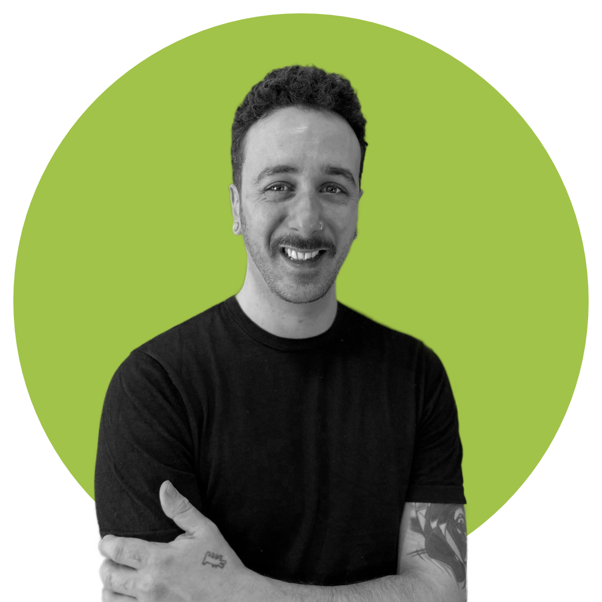

Adi Gottlieb
Designer and Web Developer

As a UX designer, I combine my passion for UX design with my extensive background in marketing and graphic design.
I create seamless and intuitive digital experiences that enhance user engagement and satisfaction, while also driving business objectives.
I have a professional diploma in UX design from the UX Design Institute and multiple certifications in ergonomics and 3D printing.
Education
Professional Diploma in UX Design
UX Design Institute - 2024
- User Research
- Wireframing
- Usability testing
- Prototyping
- Interaction Design
Professional Certificate in Industrial Design
Sapir College, Sderot, Israel - 2017
- Technical Sketching
- 3D Modeling
- Solidworks
- Design and Art history
- Adobe CC Suite
Work experience
asgoodasnew Electronics GmbH, Berlin, DE
Senior graphic designer
10/2024 – 02/2025
Developed and managed all graphical assets for the marketing, sales, and product teams,
ensuring high quality visuals across campaigns, promotions, and product listings.
Strengthened the brand’s market visibility through compelling design solutions.
- Designed and executed campaigns for the
online shop and social media
- Ensured high-quality product images for a polished and professional look
- Contributed to a cohesive brand identity across all visual assets
Warnke Marketing Services GmbH, Köln, DE
Visual Designer and Online Shop Manager
01/2021 – 04/2024
through online campaigns and UX optimization.
Managed 1,200+ products across 5 food supplement brands, driving improved efficiency and performance
- Boosted sales by 25% over 3 years through paid digital campaigns.
- Enhanced user satisfaction by 30% by
conducting user research and optimizing
website experiences.
- Led full UI/UX design process, from wireframes to prototypes.
- Increased user engagement by 40% through dynamic banners and design elements
- Designed labels and packaging, boosting brand recognition by 50%.
Museum for Applied Arts Köln (MAKK)|Köln, DE
Guide and Instructor
06/2020 – 03/2023
As a tour guide in the Museum for applied arts (MAKK) in Köln,
I gave frontal and online live lectures on different design topics and product designers, in the Hebrew and German languages,
for crowds ranging from 10 to 25 people. promotions, and product listings.
Strengthened the brand’s market visibility through compelling design solutions.
- Delivered lectures on various design topics and product designers in Hebrew and German.
- Moderated recycling and upcycling workshops for children aged 8 to 12.
- Educated children on the importance of recycling and upcycling.
Skills
- User Experience (UX) Design
- Human Computer Interaction (HCI)
- Design Thinking
- User Research
- Prototyping
- Figma
- 3D Modeling
- Illustration
- Wireframing
- Marketing
Languages
- Hebrew (Native Tongue)
- English (Fluent)
- German (Advanced)